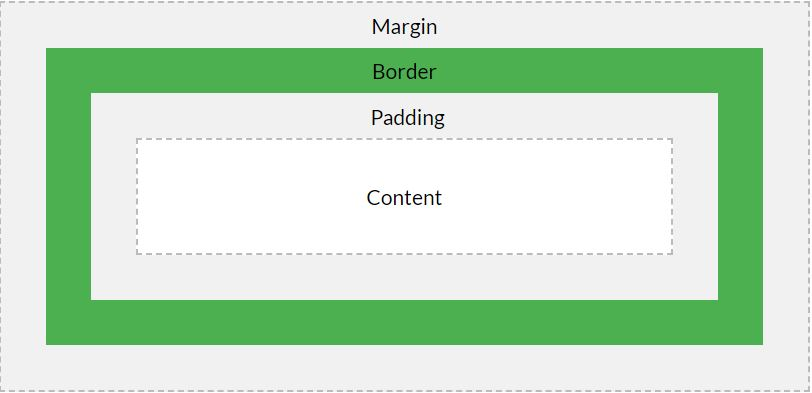

Index
-
HTML & CSS Module
The tag that we can identify with their name or tag.Some of the semantic tags are given below:
There are other semantic tags. If you want to know about all the semantic you can visit SEMANTIC TAG
The tag which create a seperate line is known as Blog tag. Some blog tags are given below:
An inline element does not start on a new line and only takes up as much width as necessary.

All HTML elements can be considered as boxes. In CSS, the term "box model" is used when talking about design and layout. The CSS box model is essentially a box that wraps around every HTML element. It consists of: margins, borders, padding, and the actual content.
Explanation of the different parts: